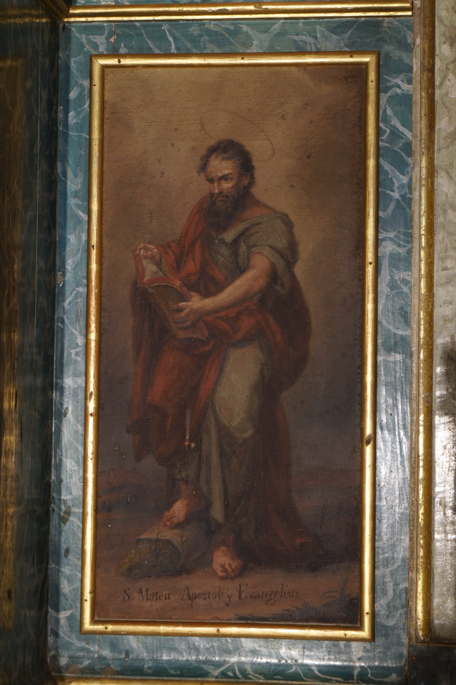

Sant Mateu (s. I) va ser un dels dotze apòstols i se’l considera l’autor del primer dels Evangelis canònics. Era recaptador d'impostos per als romans. Un dia que estava al seu lloc de feina, Jesús passà per davant i li digué “Segueix-me”, i ell ho deixà tot per convertir-se en un dels seus seguidors més fidels. Després de la mort de Jesús predicà per Judea i per l’actual Etiòpia, on, segons la llegenda, va ser executat perquè en un sermó retregué al rei Hitarc que volgués casar-se amb la seva neboda, la princesa Ifigènia, a qui Mateu havia convertit i consagrat a Déu.
En aquesta pintura apareix llegint un llibre que representa el seu Evangeli. La vareta de mesurar que sobresurt entre els plecs de la túnica i la bossa de doblers fan referència a la seva feina anterior com a recaptador d’imposts.